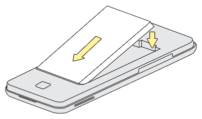

Inserting the battery
Before proceeding with these steps, make sure that your mobile phone is turned off.
-
Insert the battery into the battery compartment. See the following image:

- Put the back cover on. Make sure it is closed firmly.